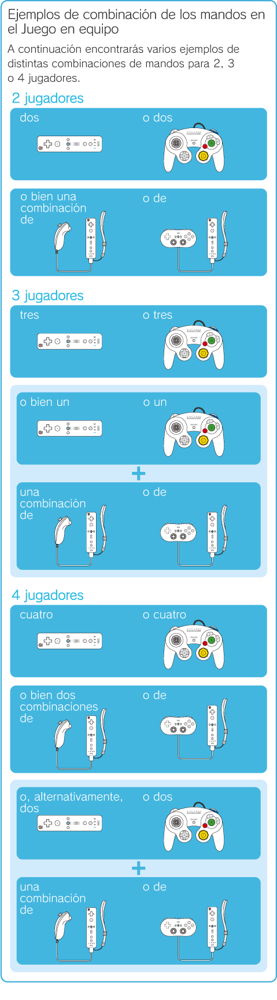
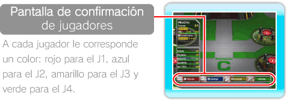
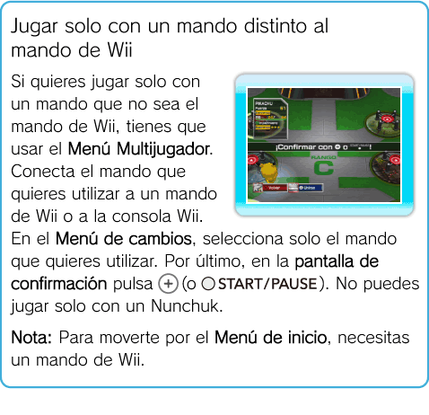

18 |
Instalaciones para el Juego en equipo |
 |
|
Puedes comenzar el Juego en equipo usando la instalación MULTIJUGADOR de la Terminal o seleccionando MULTIJUGADOR en el Menú de pausa (ver “Menú de pausa” en la página 16). La configuración del Juego en equipo es la misma en ambos casos.
MULTIJUGADOR
Sin embargo, debes tener al menos un Pokémon y un mando para cada jugador. Necesitarás haber añadido suficientes Pokémon en las Fases o que uno de los jugadores tenga Pokémon guardados en el mando de Wii.
En el Juego en equipo, puedes conectar un Nunchuk o un mando clásico al mando de Wii para que dos jugadores puedan jugar al mismo tiempo.
 Comenzar el Juego en equipo Sigue los pasos siguientes para configurar el Juego en equipo:
Acércate a la instalación MULTIJUGADOR, pulsa
Sincroniza un mando de Wii con la consola Wii, conecta un Nunchuk o un mando clásico a un mando de Wii ya sincronizado, o bien conecta un mando de Nintendo GameCube a la consola Wii. A continuación podrás comprobar el número de mandos conectados.
Para empezar a jugar, pulsa
Nota: Cuando conectes un Nunchuk o un mando clásico a un mando de Wii, aparecerá la pantalla de confirmación de jugadores. 
Para cada jugador aparece un Menú de cambios. Selecciona el Pokémon que quieres controlar. Ten en cuenta que no podrás elegir los Pokémon que hayan escogido los otros jugadores.
Cuando todos los jugadores hayan elegido un Pokémon, aparecerá la pantalla de confirmación. Uno de los jugadores que no esté usando un Nunchuk, debe pulsar
Una vez configurado el Juego en equipo, los Pokémon de todos los jugadores aparecerán en la Terminal. Cada Pokémon lleva el número y el color del jugador que lo controla.
Salir del Juego en equipo Si quieres salir del Juego en equipo para jugar solo, o si uno de los jugadores quiere abandonar la partida, el resto de jugadores deben elegir de nuevo su Pokémon en la pantalla Multijugador. El jugador que desea abandonar la partida debe seleccionar VOLVER en el Menú de cambios de la pantalla Multijugador (ver “Controles” en la página 7). El Menú de cambios desaparecerá. El resto de jugadores que van a continuar la partida han de seleccionar su Pokémon de nuevo. Cuando uno de los jugadores pulse
 MANDO DE Wii
En esta instalación se pueden enviar Pokémon al mando de Wii para poder usarlos en la consola Wii de un amigo en el Juego en equipo, o simplemente para regalárselos. Sin embargo, no se pueden guardar o sacar Pokémon cuya Fuerza esté limitada por la Llave asombrosa. En un mando de Wii se pueden guardar hasta 12 Pokémon.
Nota: Si hay otros datos guardados en el mando de Wii, se sobrescribirán (a excepción de los personajes Mii™).
Nota: Solo puedes guardar o sacar Pokémon de Pokémon Rumble.
Nota: Ten en cuenta que los Pokémon que envíes al mando de Wii dejarán de estar en la consola Wii y viceversa.
Enviar un Pokémon a un mando de Wii o a la consola Wii Cuando quieras enviar un Pokémon de la consola Wii al mando de Wii, selecciona SÍ en la instalación MANDO DE Wii. Selecciona un Pokémon pulsando Cuando quieras enviar un Pokémon del mando de Wii a la consola Wii, selecciona un Pokémon del mando de Wii (con el icono ) pulsando |
 y selecciona SÍ, o elige MULTIJUGADOR en el Menú de pausa.
y selecciona SÍ, o elige MULTIJUGADOR en el Menú de pausa. en el Nunchuk,
en el Nunchuk,  en el mando clásico o
en el mando clásico o  en el mando de Nintendo GameCube.
en el mando de Nintendo GameCube. (o ) para finalizar la configuración del Juego en equipo.
(o ) para finalizar la configuración del Juego en equipo. para confirmar y el Pokémon se enviará al mando de Wii.
para confirmar y el Pokémon se enviará al mando de Wii. |
 |
 |